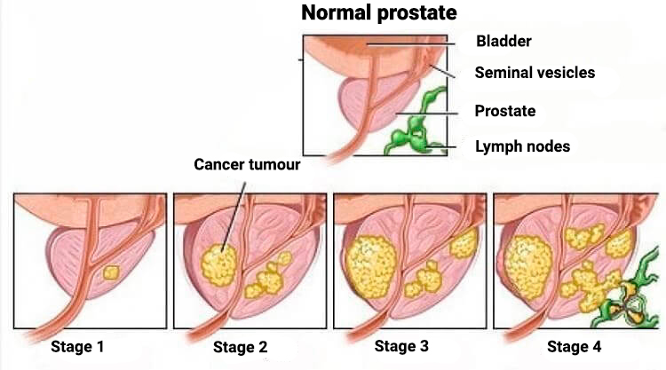

ИЗВЕСТЕН УРОЛОГ: „ВЪЗПАЛЕНИЕТО НА ПРОСТАТАТА НЕ Е ПРОСТО ВРЕМЕННА БОЛКА, МЪЖЪТ МОЖЕ ДА СИ ОТИДЕ ОТ ТОВА ВЪЗПАЛЕНИЕ В РАМКИТЕ НА 10-14 ГОДИНИ. ВИНАГИ ИМА РЕШЕНИЕ, НО ТО НЕ Е ДОСТЪПНО ЗА ВСИЧКИ“
Димитър Станчев: „Аз гарантирам на всички мъже, които страдат от възпаление на простатата, че те могат да получат най-новата субстанция, която ще им помогне да се справят с това състояние.“
По време на пресконференцията завеждащият уролог в клиниката д-р Димитър Станчев заяви: „Възпалението на простатата не е просто неприятно медицинско състояние. Без правилното лечение то може да премине в аденома. Сред всички медицински заболявания смъртността, причинена от аденома на простатата е една от най-високите. Нито един мъж, страдащ от аденома, не преживява повече от 10-14 години.“
Извънредното интервю с д-р Димитър Станчев, уролог с богат опит: „Защо възпалението на простатата е толкова опасно и как мъжете могат да се предпазят?“
Журналист: Защо възпалението на простатата се смята за опасно заболяване?
Димитър Станчев: Знаете ли колко мъже се починали от възпаление на простатата тази година? Хиляди. И повечето от тях именно поради аденома на простатата, тоест увеличена простата. Повече от половината! Имайки предвид статистиката, 72 % от мъжете на възраст над 50 години са с диагностирано възпаление на простатата (42 % от мъжете под 40-годишна възраст). Най-опасните характеристики на това заболяване е, че състоянието не се подобрява с течение на времето. Ако възпалението на простатата не се лекува, то може да премине в аденома на простатата или злокачествен тумор.
Това означава, че всеки мъж, който страда от възпаление на простатата (простатит), може да умре по всяко време, когато то премине в аденома. Аденомата на простатата, тоест увеличена простата, е една от най-разпространените болести при мъжете. Ако пациентът не предприеме правилни действия, могат да се развият ракови тумори.
Затова аз смятам, че възпалението на простатата е опасно заболяване и че то е сред главните причини за смърт сред мъжете. И както вече казах, 72 % от мъжете на възраст над 50 години, получават възпаление на простатата.
Журналист: Защо докторите срещат затруднения в лечението на тази болест? Нима ефективното лечение не спасява хиляди човешки животи?
Димитър Станчев: Най-важният факт е, че мъжете обичайно отиват на лекар, когато вече е късно, защото един от традиционните методи е непопулярният масаж на простатата. А когато те най-накрая решат да отидат на доктор, той им предписва някакъв медикамент и те не го приемат редовно, въпреки указанията.

Следващият фактор е недостигът на персонал в клиниките. Как можем да посветим цялото си време на всички пациенти, щом няма достатъчно лекари, уролози и медицински персонал? А за лечението на дадени болести са необходими специалисти, които, както вече казах, не достигат. Понякога докторите назначават напълно неподходящи медикаменти, но това е друга история. Всички лекари имат дипломи, някои от тях наистина са добри и действително са отдадени на пациентите си, но други могат само да навредят, но не и да помогнат. Не искам дори да започвам да ви разказвам за нивото на стрес в тази професия. Ние вече се сбогувахме с множество възрастни лекари, а младите им заместници често нямат опит. Така че ни липсва не само персонал, но и квалифициран персонал.
Журналист: Да разбирам ли, че високата смъртност от възпалението на простатата се дължи на липса на лекари или на добри доктори?
Димитър Станчев: Това определено не е единствената причина. Трябва да вземем предвид и липсата на добра и ефективна медицина. Фармацевтичните компании често ни продават всичко друго, но не и ефективни медикаменти. Проблемът е, че медицината е остаряла и има известни злоупотреби, които като цяло я правят неефективна. Някои лекари предписват на практика всичко. Често те назначават медикаменти, които дават само временно решение, тушират острата фаза на възпалението на простатата, но в същото време нанасят голяма вреда на организма и могат да имат ужасни последици. А повечето медикаменти не са предназначени за лечение на простатита, а само временно да успокоят възпалението.

Всичко от казаното по-горе допринася за този изход и смъртността е висока. Това ефективно лечение може да се съпровожда от редица усложнения, общото състояние на пациента се влошава и често завършва фатално. Разбира се, има някои частни медицински заведения. Но дори там можем да намерим доктори, които не се занимават сериозно с пациента и онова, което действително му е необходимо. Това важи с пълна сила за младите и неопитните доктори. И да не забравяме, че целта е да се изстискат колкото може повече пари от пациента. За жалост това е суровата реалност.
Журналист: Какво трябва да направят мъжете, които страдат от възпаление на простатата? Да чакат смъртта? Убеден съм, че вие в качеството на главния уролог в клиниката, имате отговор на този въпрос, нали?
Димитър Станчев: Да, ние работим в посока да помогнем на всеки пациент, който страда от простатит. Ние не можем да решим проблема с липсата на персонал за една нощ. Това не зависи само от клиниката, но и от образователната ни система. Разбира се, ние имаме практикуващи, но за този проблем няма бързо решение. виждате същото положение дори в другите европейски страни и в света. Когато разговарям с мои колеги от чужбина, виждаме, че сме изправени пред едни и същи трудности.
Но нека да останем позитивни, затова аз ще посоча, че в края на тунела има светлина. Аз успях да създам дистрибуторска система за една нова хранителна добавка, която може да облекчи напълно възпалението на простатата и всички произтичащи от него усложнения. Програмата ще стартира в своята цялост през следващите шест месеца, но аз успях да я организирам по начин, който вече е достъпен за всички мъже.
Журналист: Бихте ли ни разказали повече за тази хранителна добавка?
Димитър Станчев: Продуктът, за който говоря, напълно облекчава възпалението на простатата, на всеки стадий. Още от първия ден на приема на тези капсули продуктът намалява риска от развитие на аденоми и тумори. Това означава, че капсулите могат да сведат до нула риска от сериозни усложнения и летален изход. От момента, когато започнат курса, мъжете с възпаление на простатата вече не са в опасност.
Аз смятам, че тази хранителна добавка за облекчаване на възпаление на простатата може да спаси хиляди животи. Затова вложих цялата си енергия в този продукт и настоявах за клинични изпитвания.
Журналист: За какъв продукт става въпрос? Каква е тайната на този продукт?
Димитър Станчев: Продуктът се нарича „ “ и е съвършено нов продукт на пазара. В контраст с много други средства и препарати за лечение на възпалението на простатата, тази хранителна добавка е разработена от експерти в тази област, а не от гигантските фармацевтични компании. Продуктът всъщност е разработен от междуведомствена група водещи уролози и учени. Освен това е на натурална основа, съдържайки екстракт от тиквено семе, цинк и витамин Е, които са благотворни за организма. Приема се съвсем лесно – едва-две капсули на ден, за предпочитане между храненията.
Хранителната добавка има три важни принципа на действие: първо, нормализира функцията на простатата и подобрява притока на кръв към органите в малкия таз. Второ, елиминира отпадъчните продукти от органите в малкия таз. И трето, възстановява отделянето на мъжките хормони. Този трети принцип влияе благоприятно на мъжката потентност. Можем да наречем това „добре приет страничен ефект“.
Възпалението отминава бързо, след като човек започне да взема капсулите – мъжете, които ги приемат, споделят, че забелязват първите резултати, а именно уринират без болка и парене, още на другата сутрин след първия прием на . Обичайно е необходим 14-дневен курс с за цялостното облекчаване на възпалението на простатата. В малко по-запуснатите случаи или напреднали стадии на възпалението третирането трябва да бъде по-продължително.
Другото предимство на хранителната добавка е, че съдържа много витамини и микроелементи. Те оказват значителен облекчаващ ефект върху мъжкото тяло.
Освен трите главни принципа на действието си, капсулите имат и други ефекти:
- намалява и облекчава хроничното възпаление на простатата;
- предотвратява инфекциите на пикочните пътища;
- улеснява уринирането;
- възстановява сексуалната потентност:
- укрепва имунната система на организма;
- подобрява притока на кръв към органите на таза;
- осигурява витамини и микроелементи в човешкото тяло.
Журналист: Има ли някакви противопоказания за капсулите ?
Димитър Станчев: Не са известни никакви противопоказания. Хранителната добавка Pro Caps се произвежда само от натурални съставки и към тях няма известни алергични реакции. Капсулите Pro Caps могат да се вземат и от хора, които иначе са алергични към някои лекарства. Капсулите са напълно безвредни за черния дроб, обичайно най-стресирания орган, когато се приемат препарати със силен ефект.
Както вече казах, продуктът беше разработен от независими експерти и понастоящем производството се случва с научен център за здраве и медицина в България, който скоро ще бъде разширен. Това е причината капсулите да са достъпни в рамките на специална програма .
Ако беше собственост на големите фармацевтични компании, цената на продукта определено щеше да бъде няколко пъти по-висока. Но той е собственост на научната общност и затова се предлага на хората на достъпна цена.
Планираше се продажбата да започне в рамките на 6 месеца, но аз успях да се договоря с изследователския център и да набавя средствата, за да финансирам ранно лансиране на продукта. Сега той е достъпен за всички, при това с 50-% отстъпка. Цялото количество в склада сега е насочено към промо програмата на .
Журналист: Как мъжете могат да се сдобият с този продукт? Трябва ли им някакъв медицински сертификат или сходни документи?
Димитър Станчев: Главното изискване е да са на възраст над 30 години. Тогава поръчаният продукт се изпраща по пощата на лицето, което го е поръчало. Ние смятаме, че това е най-бързият начин нашите абонати да могат да поръчат хранителната добавка и да започнат курса. Процесът фактически е опростен: вие просто правите поръчка, като оставяте име и телефонен номер, изчаквате обаждането на оператор, съобщавате му адреса си удобното за вас време за доставка. После получавате пакета по пощата.
Условията за купуването на продукта в рамките на тази програма:
- Само за лична употреба
Това се налага, за да защитим продукта от препродажба, тоест, когато отделни лица поръчват големи количества от продукта, за да го препродават на по-нисока цена. - Направете поръчка за продукта през официалния уебсайт на програмата
Официалният уебсайт на програмата гарантира цената и оригиналността на продукта. По-долу ще намерите формуляр, който можете да поръчате, ако искате да поръчате.
Журналист: Благодаря Ви за отделеното време и за отговорите. Вие ни дадохте полезна информация и аз смятам, че много от читателите ни ще решат да закупят този продукт, за да предпазят здравето си.
Журналист: Благодаря Ви още веднъж. Ще поговорим повече следващия път!
Моят съпруг има възпаление на простатата. Той иска да се лекува, но не знае как. Не мога да го убедя да отиде на доктор. Веднъж той отиде, но не остана очарован от масажа на простатата през ануса. И не иска да отиде отново. Аз му поръчах , докато капсулите са с отстъпка.
Системата на здравеопазването в България действително е в ужасно състояние.
Поздравления! Капсулите наистина са ефективни, когато трябва да се спрявим с възпалението на простатата! В моя случай то премина и повече не се върна. Преди месец и половина аз направих поръчка, след 4 дни пакетът ме очакваше и оттогава аз мога да ходя до тоалетна без затруднения! Благодаря ви, хора, благодаря и на производителя!
Това е страхотно средство. Дори аз мога да го потвърдя. Препоръча ми го познат доктор. Не о предписват в клиниките, но могат да ви посъветват да си го вземете. Помогна ми много, възпалението изчезна напълно. Освен това ми помогна и с ерекцията...
Слава на Бога, че все още има лекари, които милеят за своите пациенти! Невероятна хранителна добавка. Приемам я от 3 дни и вече уринирам значително по-лесно. И болката също изчезна. Продължавам да вземам капсулите. Благодаря за съвета, искрено! Отначало бях малко скептичен, но видях резултати сред 3 дни.
Благодаря за интересната статия. Аз се боря с възпалението на простатата от три години и без никакъв успех. Поръчах си капсулите . Бяха останали няколко бройки, но операторът ми обясни, че се разпродават много бързо.
Как се поръчва тази хранителна добавка ?
Попълвате формуляра. Възможността да тествам този продукт ми помогна много!
Някой поръчал ли го е вече? Колкото дълго сте го вземали?
Аз го поръчах преди известно време чрез един мой приятел, но тогава нямаше отстъпка. Платих много повече, отколкото струва сега, но си струваше. В моя случай хроничното възпаление на простатата изчезна след 2 седмици и досега, след 4 месеца, не се е завърнало. Получих пратката след 3 дни.
Баща ми имаше възпаление на простатата. Ние му купихме този продукт преди 2 месеца. Той приема капсулите 10 дни. През този период възпалението премина напълно. Лекарят, който го лекуваше с антибиотици, беше поразен и никога не беше чувал за тази хранителна добавка. Баща ми не му повярва, но всичко приключи добре!

Аз също ще ги взема за мъжа ми. Просто нямам други идеи как да му помогна. Възпалението периодично заглъхва, а после отново се появява. Не искам да ви разказвам колко време измина, откакто не сме правили секс...
Аз се боря с възпалениято от няколко години, всичко започна, когато бях на 38 г. Подложих се на различни лечения, но възпалението продължаваше да се влошава. Последният път беше просто ужасно. Казаха ми, че лесно може да се превърне в рак на простатата. Затова препоръчвам на всички, които страдат от възпаление на простатата, за да започнат лечението възможно най-скоро. Това е изключително опасно заболяване.
Мисля, че аз съм един от многото хора, които страдат от това и слава Богу открих хранителната добавка . Тя ме спаси от простатита, нещо, което много медикаменти дотогава не бяха успели да направят! Попаднах на тази страница случайно, направих поръчката и останах много доволен...
Наистина ли ви помогна, хора? Докторите и лекарствата обикновено са безполезни...
Разбира се! Капсулите имат много силно въздействие и изобщо не вредят на здравето! Поръчвайте смело! При мен сработиха, аденома на простатата просто изчезна.
Благодаря ви, хора, тази добавка помогна на съпруга ми много. Искам да се обърна към всички мъже с призив да не отлагат, а да се погрижат за здравето си!
Аз се борих с простатита от години. После реших да дам шанс на и възпалението се успокои още на следващия ден. Общо взето ми отне 2 седмици. Сега се чувствам като младеж. Хубаво е, че можеш да направиш поръчката на официалния сайт и не се налага да ходиш тук-там, за да се сдобиеш с този продукт. Къде е бил досега?
Аз изпробвах линка към уебсайта и мисля, че работи безупречно. Направих поръчката и ми се обади операторът, за да потвърди поръчката. Той само ме предупреди, че количествата в склада са ограничени. Пратката трябва да пристигне всеки момент. Нямам търпение! Много благодаря!
Великолепен продукт, на мен ми помогна след 2 седмици. Ефективен е, а сега с отстъпката е и достъпен.